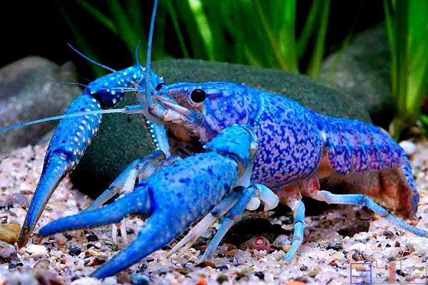

Because there used to be a void of blue Procambarus clarki on the market, Procambarus alleni was introduced to fill out the void. Having a longer and narrower pincher, they are also native in the southern part of the USA. They are naturally blue, but ones with a darker shade of blue is more desirable in the eyes of collectors; that being said, they are also very cheap and common, so much so that one could hardly call it a collectors piece. They tend to be more shy in the face of keepers: when the keepers approach they tend to hide away instead of coming out to defend their territory. However, they are more fierce than Procambarus clarki to other creatures living in the same tank. I highly recommend keeping them solitarily.
因為過去市場上缺乏藍色的克氏原螯蝦，佛羅里達藍螯蝦就被引進來填補這個缺少的顏色。牠們同樣來自美國南部，但牠們的螯跟克氏原螯蝦相比較為細長。牠們自然的體色就是藍色，但藍色較深的個體比較受收藏家喜愛；話是這麼說，但牠們跟克氏原螯蝦一樣身價低廉而常見，因此其實沒有什麼收藏價值。在飼主面前，牠們通常比較害羞；飼主靠近魚缸時牠們傾向躲進藏身處，而不是站出來捍衛領地。然而，牠們對身處同個魚缸的其它生物卻比克氏原螯蝦更加兇狠。我強烈建議將這個物種單獨飼養在一個魚缸。
